Official Vivid
最接近官方样本的鲜明绿 / 蓝 / 橙立体物件。
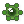
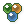
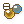
- 和 GH 工具栏气质一致
- 剪影强、对比够
- 教学演示最清晰
官方图标也是 24×24，但看起来清楚，是因为：透明底上的立体小物件、顶光体积、强剪影。 之前 P1–P5 用「色砖底板 + 白符号」——这才显得糊、像低配。下面改成官方同款工艺，请选 O1–O4。 确认前不改插件。
本机抽出的官方样本（放大 3×）：
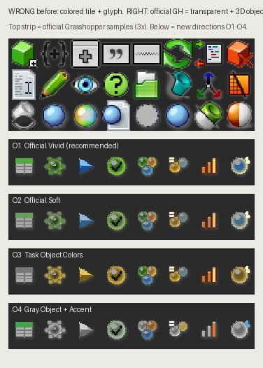
上条 = 官方样本；下面四行 = 新方向 O1–O4（同一套隐喻：数据 / 训练 / 预测 / 评估 / 聚类 / 分类 / 回归 / 智能）。
最接近官方样本的鲜明绿 / 蓝 / 橙立体物件。



同一套立体语言，饱和度略降，更耐看。
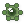
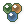
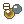
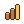
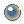
立体物件上带任务色：黄分类 / 橙回归 / 绿聚类。
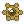
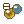
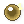
主体灰塑料（像官方灰控件），彩色只作功能点缀。
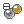